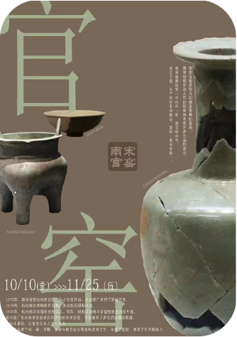
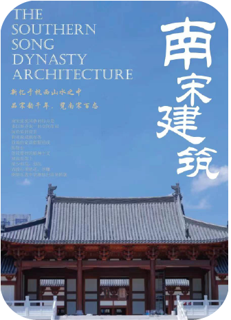
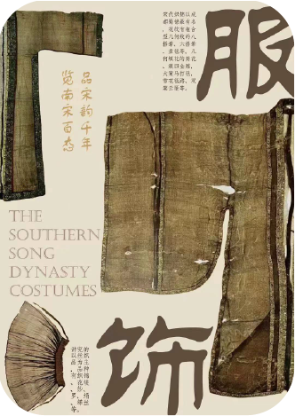

南宋官窑
南宋官窑是官方的烧制瓷器的窑场，南宋时期劳动人民的制瓷技术有许多创造和进步。南宋建都临安时，建立修内司、郊坛下窑，生产官廷专用御品，故称“南宋官窑”……

南宋建筑
南宋建筑风格的特点是多以整齐划一的空间布局，纯色彩的背景和亚麻或帆布等质地的家具搭配组成折射出现代简约的精神主义，建筑装饰上很少刻花，而流行用贴花、浮雕……

南宋服饰
宋代织锦以成都蜀锦最有名，花纹有组合型儿何纹的八搭晕、六搭晕、盘毯等。几个填花的葵花、簇四金雕、大窠马打毯、雪花毯路、双窠云雁等……